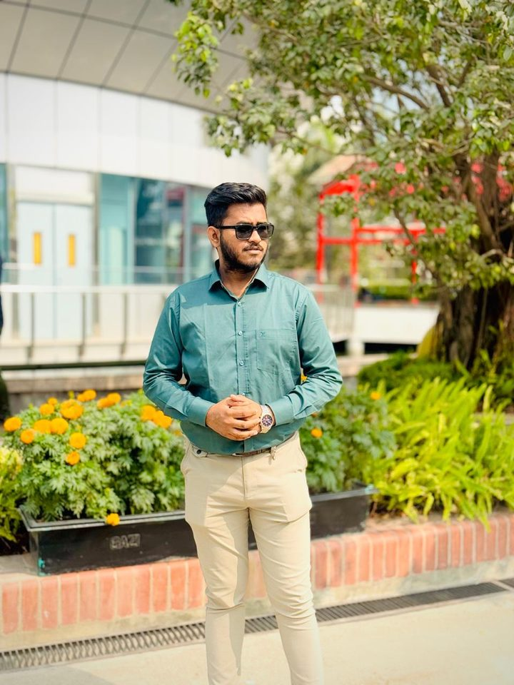
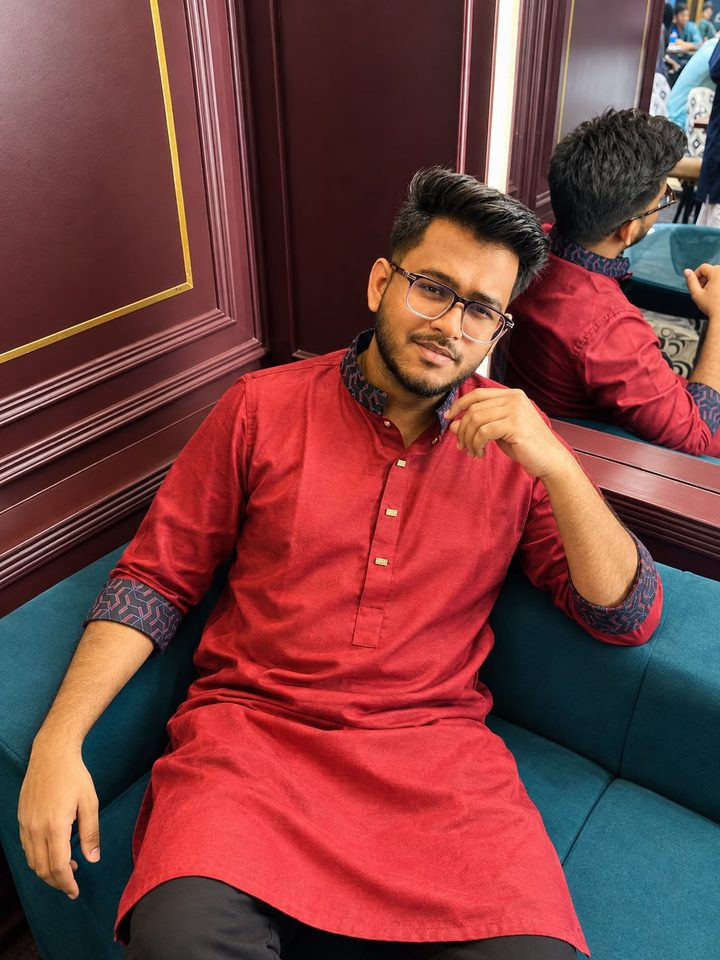

UniHub
Web application
A campus marketplace and rental platform where students and vendors buy, sell, rent and rent out items. Transactions are completed face to face inside the university community.
Information Systems Analyst
Bridging Business & Technology
Final-year CSE student at AIUB (graduating 2027) who combines four years of running a real business with training in systems analysis, SQL databases and web development. Seeking an entry-level Systems Analyst, Business Analyst or Junior Developer role.


I’m a final-year Computer Science student at American International University-Bangladesh (graduating 2027) with a practical view of technology: software should solve a business problem someone actually has.
From 2021 to 2025 I ran a gadgets and clothing business in Dhaka, handling inventory, sales and customers while studying full time. That is where my interest in systems analysis came from, and why I enjoy turning messy requirements and raw data into clear, working systems.
I’m looking for an entry-level Systems Analyst, Business Analyst or Junior Developer role where I can turn business needs into reliable software.
Academic and personal builds, from web platforms to an assistive IoT device.
A campus marketplace and rental platform where students and vendors buy, sell, rent and rent out items. Transactions are completed face to face inside the university community.
A cattle trading platform where users list, browse, buy and sell cattle online.
A token management system for American International University-Bangladesh that organises token-related services.
A sensor-based walking aid that detects obstacles and water, then warns blind and visually impaired users through vibration and voice alerts.
A village-themed visual scene that applies fundamental computer graphics concepts.
Course project with a full presentation and a recycling-plant walkthrough video.
Research team member and contributor, with Python-based data analysis.
A study of whether readers notice AI source labels on de-influencing content. I contributed to the analysis using pandas, SciPy and scikit-learn.
C#, C++, Java, C, PHP, Python
HTML, CSS, JavaScript, .NET Core
SQL, Database Management Systems (DBMS)
SDLC, systems analysis and design, object-oriented programming (OOP), software development principles
Python (pandas, SciPy, scikit-learn), data cleaning, data interpretation, basic statistics, basic machine learning
Git, GitHub, Microsoft Excel, Word, PowerPoint
American International University-Bangladesh, Dhaka. Coursework: object-oriented programming, database management systems, software engineering, systems analysis and design.
I’m open to Systems Analyst, Business Analyst and Junior Developer roles in Dhaka. Email is the fastest way to reach me.